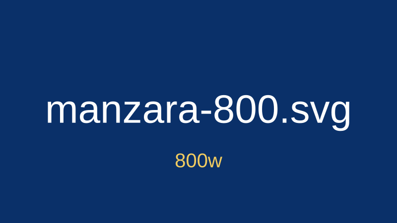

Tarayıcı hangi dosyayı seçti?

Görselde yazan dosya adı, tarayıcının sizes ve cihazın piksel oranına (DPR) göre seçtiği adaydır. DevTools'ta Network panelinde hangi dosyanın indirildiği de görülebilir.

Görselde yazan dosya adı, tarayıcının sizes ve cihazın piksel oranına (DPR) göre seçtiği adaydır. DevTools'ta Network panelinde hangi dosyanın indirildiği de görülebilir.